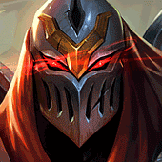
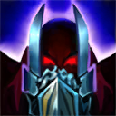
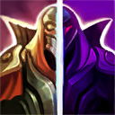
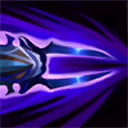
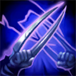

起手裝備
 長劍
長劍

7.3f官方未列此英雄的一般技能／基礎能力調整；本輪按技能與位置需求複核評級、配置及裝備間接影響。 打野共通：燃燒基礎18–158、額外雙防係數20%；節約30金、落後55金，不能沿用舊清營與購裝時間。
維持 S。影子與爆發可威脅落單後排；敵方保命主動裝備和控制會壓縮擊殺窗口，須追蹤冷卻。 核心功能強且能穩定影響戰局，但需要管理明確的站位或時機條件。
妖夢鬼刀 → 星蝕：前者提供移動找角度與物理爆發，後者補短換血後的續戰與傷害。保留五件成裝與獨立鞋線；核心未成形時不把最後一格的保命／穿透能力當成已有。
征服者：以獨立技能與普攻累積長戰收益；短打一輪就撤退時通常無法吃滿。其餘選用熱忱戰鬥、斷切、傳奇：疾速、卓越，依本頁輸出方式與生存需求配套。
閃現＋重擊。重擊留意物件血線，野區收益與承傷調整後先判斷續航再入侵；另一技能服務進退，不能預設同時有點燃。
本站獨立邏輯複核：以既有手機版技能／裝備／符文資料與已整理的7.3f官方差異推演；本輪不採用外站評級、勝率或推薦配置。 完成策略與配置一致性複核，不等於全部技能逐級數值、傷害計算及所有特殊互動已實測；既有缺證項目仍保留。
星蝕：物攻降低5，保留護盾與短換血用途；不因削弱就無條件換裝，持續混戰可比較飲血戰錘。
妖夢鬼刀 → 星蝕：前者提供移動找角度與物理爆發，後者補短換血後的續戰與傷害。保留五件成裝與獨立鞋線；核心未成形時不把最後一格的保命／穿透能力當成已有。


五件成裝與鞋子分開列示；起手與核心是購買路線，不是額外佔用的成裝欄位。鞋子完成時機仍依對線壓力與回城金錢調整。


征服者：以獨立技能與普攻累積長戰收益；短打一輪就撤退時通常無法吃滿。其餘選用熱忱戰鬥、斷切、傳奇：疾速、卓越，依本頁輸出方式與生存需求配套。


閃現＋重擊。重擊留意物件血線，野區收益與承傷調整後先判斷續航再入侵；另一技能服務進退，不能預設同時有點燃。
加點優先：Q > E > W
優先 Q > E > W，以風魔手裡劍承擔主要循環；初級取點仍依15級表保留完整基本技能，不把主升順序誤認成開局必須連點同一招。

對低生命目標普攻時造成額外魔法傷害；同一目標在短時間內只會觸發一次，是補刀、換血與完成斬殺的重要傷害來源。
劫與影分身朝指定方向投擲手裡劍並造成物理傷害。多枚手裡劍同時命中同一目標，是主要爆發來源。
有後續版本調整的項目以較新數值為準；未列出者不代表完整技能成長表。

向前放出影分身，影分身會同步施放一技與三技；重施可與影分身交換位置。劫與影子用相同技能命中同一目標時可回復能量。

劫與影分身斬擊周圍敵人。劫本體命中英雄可縮短二技冷卻，影分身命中則會造成緩速，方便後續手裡劍命中。
有後續版本調整的項目以較新數值為準；未列出者不代表完整技能成長表。

短暫不可被選取並突進到目標身後，留下可交換位置的影分身並附加印記；印記會依期間內造成的傷害延遲爆炸。
影子與爆發可威脅落單後排；敵方保命主動裝備和控制會壓縮擊殺窗口，須追蹤冷卻。
2技影子 → 3技緩速 → 1技雙鏢 → 換位貼近 → 普攻
先用影分身的三技緩速，提高雙手裡劍命中率；確認安全後再換位近身補被動傷害。
4技標記 → 3技 → 1技 → 普攻 → 2技影子 → 換位撤離
大絕落地後快速打滿技能與普攻，再利用影子換位離開。不要在敵方控制技能尚未交出時盲目回到影子位置。
2技側放 → 4技進場 → 3技 → 1技多重命中 → 普攻
先在側面放出影子，再用大絕創造第二個角度，讓多枚手裡劍同時命中核心目標。
以一技和三技範圍傷害快速清野，二技優先保留給跨牆、追擊或撤退。第一輪後尋找沒有硬控或已交位移的路線，先用影分身減速再嘗試雙手裡劍。
妖夢鬼刀 → 星蝕 → 席利妲咒怨為預設前段順序。影子與 Q 交叉命中決定能量和爆發，征服者搭疾速服務野區較長戰鬥。後兩格依敵方實際威脅替換；先完成關鍵核心，再決定防裝與穿透，支援物件前確認重擊充能及隊友線權。
正面 5v5 不要先手衝入控制鏈；等敵方前排技能交掉，從側翼鎖定後排。完成印記爆發後立即用大絕影子或二技影子撤離。
影子與爆發可威脅落單後排；敵方保命主動裝備和控制會壓縮擊殺窗口，須追蹤冷卻。 名單僅作機制對位提示；優先看控制是否交掉、兵線／地形與隊友跟進，不宣稱勝率剋制榜。
對局名單是機制與分路判斷，不代表固定勝率；需同時看雙方熟練度、兵線與陣容。
替換以本頁五件成裝為基準；同一格建議擇一。二、三級鞋是一條升級線，換鞋時整條同步；魔劍進化不占新欄位。
高
觸發：敵方前排物防／魔防成形，或近身普攻威脅明顯。
已帶對應穿透或冰霜之心時保留，不重複購買；依實際傷害類型決定。
高
觸發：主要死亡原因是一輪集火，無法完成輸出或控制。
同一格有多個建議時擇一；核心成形後依實際威脅調整。
高
觸發：敵方法術先手或持續魔法傷害成為主要威脅。
守護天使 → 魔提斯深淵
依魔法傷害壓力補魔防；已有命脈裝時改用自然之力，避免重複命脈。
依魔法傷害壓力補魔防；已有命脈裝時改用自然之力，避免重複命脈。
高
觸發：魔法傷害與控制鏈影響生存或輸出。
貪婪護脛 → 水星之靴
魔法傷害及可被韌性縮短的控制占主導時，鞋線整條改水星之靴→鎖鏈軍靴。
魔法傷害及可被韌性縮短的控制占主導時，鞋線整條改水星之靴→鎖鏈軍靴。
韌性不能縮短所有控制，例如擊飛；護盾與解控各有適用條件。
高
觸發：敵人持續回復令集火失敗。
席利妲咒怨 → 致死宣告
回復威脅比原穿透裝的特殊效果更重要時，替換而非再疊一件。
回復威脅比原穿透裝的特殊效果更重要時，替換而非再疊一件。
中
觸發：對手護盾多時保留巨蛇；沒有穩定護盾目標時考慮其他功能。
巨蛇鋒牙 → 夜色緣界
對手沒有反覆出現的高額護盾，且其他隊友已能處理護盾時。
巨蛇削盾需要對應目標；改用此裝提供其他輸出或防護功能。
仍維持五件成裝。
7.3f差異核對：本頁已核對本版官方變動與配置引用；本輪逐份獨立評估Tier與配置，不採外站排行；賽勒斯為保守暫定。未核實的完整成長數值保留註記。查看校正範圍。
本頁校正版本：7.3f；校正日期：2026-11-13。
參考來源標示版本：7.3f（官方差異與既有遊戲資料）
完成策略與配置一致性複核，不等於全部技能逐級數值、傷害計算及所有特殊互動已實測；既有缺證項目仍保留。
評級理由：維持 S。影子與爆發可威脅落單後排；敵方保命主動裝備和控制會壓縮擊殺窗口，須追蹤冷卻。 核心功能強且能穩定影響戰局，但需要管理明確的站位或時機條件。
維持 S。影子與爆發可威脅落單後排；敵方保命主動裝備和控制會壓縮擊殺窗口，須追蹤冷卻。 核心功能強且能穩定影響戰局，但需要管理明確的站位或時機條件。
歷史資料有後續調整時，以較新版本數值為準。
| 項目 | 調整前 | 調整後 |
|---|---|---|
| 對野怪的傷害加成 | 80% | 已移除 |
| 項目 | 調整前 | 調整後 |
|---|---|---|
| 對野怪的傷害加成 | 60% | 已移除 |